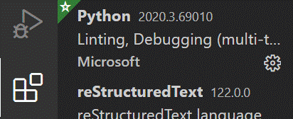
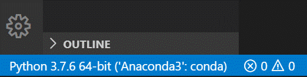
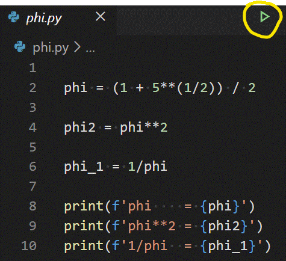
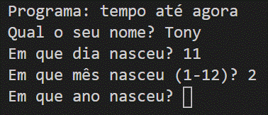
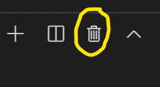

Exercícios sobre conceitos fundamentais¶
Software¶
- Python Shell ou Idle com Python Shell
- Visual Studio Code.
Exercício 1 (Números, strings, números complexos)¶
- Abra uma Python Shell ou uma Python Shell no Idle.
- Corra todos os comandos das secções Objetos fundamentais números e strings e Atribuição de nomes a objetos.
- Familiarize-se com
- Números
- Números em vírgula flutuante (com casas decimais)
- Strings
- Números complexos
- Dar nomes a objetos
Exercício 2 (cálculos simples)¶
Ainda na Python Shell, calcule
- O número de codões no código genético (43)
- O número de diferentes sequências possíveis num péptido com 50 aminoácidos (2050)
- A percentagem de vitórias de uma equipa que conseguiu vencer 30 jogos em 46 disputados.
Exercício 3 (VSCode e "número de ouro")¶
- Crie uma pasta de trabalho onde irá criar uma série de programas em Python
Nota
Um programa em Python deve ter um nome acabado em .py
Os programas vão ser criados como ficheiros de texto editados com o VSCode.
- Abra o editor de texto Visual Studio Code. Para isso, use o botão direito sobre a pasta e selecione "Open with Code":
- Verifique que a extensão Python está instalada:

- Caso não esteja, escreva "Python" em "Search Extensions in ...". A primeira que aparece é a extensão Python da Microsoft. Use o botão "Install" para instalar a extensão. Só precisa de o fazer uma vez!
- Inicie um ficheiro novo, com File – New File.
-
Escreva um programa que calcule e mostre, com
print(), a "proporção de ouro", isto é, o númerophi = (1+√5)/2 e também o seu quadrado e seu inverso.
Importante
Logo que começar a escrever o programa deve salvá-lo o mais depressa possível com File – Save As…!
Deve-lhe dar um nome acabado em .py, por exemplo phi.py.
Nota
Se o VSCode indicar que falta selecionar um “Python interpreter”, deve escolher o interpretador instalado do Anaconda, clicando no canto inferior esquerdo onde diz “No Interpreter”. Depois de escolher, deve ver o seguinte no canto inferior esquerdo do VSCode:

Ver o ponto "Select Python interpreter" Nesta página
- Familiarize-se com a edição de um programa no VSCode. Use alguns shortcuts do teclado:
HomeeEnd.Ctrl-C (copy),Ctrl-V (paste). Selecione com o rato e com o teclado. - Execute (corra) o programa. Para isso utilize o botão no canto superior direito

- Observe o resultado do programa. Corra o programa outra vez.
- Note as propriedades \phi^2 = \phi +1 e 1 / \phi = \phi - 1
Exercício 4 (°C para °F)¶
Escreva um outro programa (faça File – New File para criar um novo programa) que calcula os graus Farenheit correspondentes a 36.5 graus Celsius. Não se esqueça de salvar o programa com um nome acabado em .py. A fórmula de conversão é:
°F = 32 + (9/5) * °C
Use a função print() com strings para apresentar mensagens explicativas sobre o resultado (tipo 36.5 graus Celsius são ....)
Solução
C = 36.5
F = (9/5) * C + 32
print(f"{C} °C correspondem a {F} °F")
Exercício 5 (import e função input())¶
Escreva o seguinte programa novo (sugestão: copy-paste).
Note que há muita coisa neste programa um pouco avançada,
mas o objetivo é ilustrar a função input():
from datetime import datetime
import locale
locale.setlocale(locale.LC_ALL, "pt_PT.utf8")
print('Programa: tempo até agora')
name = input('Qual o seu nome? ')
day = input('Em que dia nasceu? ')
month = input('Em que mês nasceu (1-12)? ')
year = input('Em que ano nasceu? ')
year = int(year)
month = int(month)
day = int(day)
birth = datetime(year, month, day)
now = datetime.now()
dif = now - birth
print(f'\n{name}, o seu tempo de vida é')
print(dif)
print('ou seja,', int(dif.total_seconds()), 'segundos')
print('Nasceu em', birth.strftime("%d %B %Y, %A"))
Este programa usa o módulo datetime para realizar cálculos com datas e tempos. Para isso é necessário fazer from datetime import datetime no início do programa.
Corra o programa e observe que, no terminal de resultados, o programa pára em cada função input(), “pedindo” a introdução de um valor:

O programa só continua fazendo Enter, após a introdução de cada valor.
Nota
Para correr o programa do princípio pode sempre “destruír” os resultados anteriores de um programa usando o botão

Exercício 6 (Acesso programático à UniProt)¶
- Escreva e corra o seguinte programa (novo, com outro nome, outro ficheiro .py):
import requests
proteína = 'P00924'
link = f'http://www.uniprot.org/uniprot/{proteína}.fasta'
página = requests.get(link).text
print('Sequência da proteína', proteína, 'é')
print(página)
- Escreva um novo programa semelhante mudando
.fastapara.txt.
Exercício 7 (Solução de equação 1º grau)¶
- Escreva o seguinte programa:
"""Cálculo da solução de uma equação do 1º grau 0 = mx + b."""
m = input('declive (m) = ')
b = input('ordenada na origem (b) = ')
m = float(m)
b = float(b)
r = -b / m
print(f'raíz = {r}')
-
Corra o programa e observe os resultados. Experimente correr várias vezes, com diferentes valores de m e b para teste. Inclua um teste com m = 0.
-
Corrija o programa de forma a não dar erro com m = 0. Para isso modifique o programa da seguinte maneira:
"""Cálculo da raíz de uma equação do 1º grau 0 = mx + b."""
m = input('declive (m) = ')
b = input('ordenada na origem (b) = ')
m = float(m)
b = float(b)
if m == 0:
print('Reta horizontal: não há raízes')
else:
r = -b / m
print(f'raíz = {r}')
Explicação: a parte if... else ... faz com que o programa execute em alternativa certas partes, consoante o valor de uma condição. Neste exemplo, a condição é m == 0.
Exercício 8 (Solução equação do 2º grau)¶
- Escreva um programa que calcule as duas soluções de uma equação do segundo grau
a \cdot x^2 + b \cdot x + c = 0
- Para testar o programa, corra com diferentes valores para a, b e c:
- a = 1, b = 4, c = 2 dá duas soluções reais.
- a = 1, b = 2, c = 1 dá uma solução dupla: -1
- a = 1, b = 1, c = 1 dá duas soluções complexas.
Solução
# Este programa calcula x tal que a x2 + b x + c = 0
# testar com os seguintes valores (1,4,1) , (1,2,1) , (1,1,1)
a, b, c = 1, 4, 1
print('a =', a, 'b =', b,'c =',c, '\n')
# cálculo do discriminante
delta = b**2 - 4.0 * a * c
if delta < 0.0:
print('Soluções complexas:')
r_delta = (-delta)**0.5 * 1j
x1 = (- b + r_delta) / (2.0 * a)
x2 = (- b - r_delta) / (2.0 * a)
print("x1 =", x1, ", x2 =", x2)
elif delta > 0:
print('Soluções reais:')
r_delta = (delta)**0.5
x1 = (- b + r_delta) / (2.0 * a)
x2 = (- b - r_delta) / (2.0 * a)
print("x1 =", x1, ", x2 =", x2)
else:
print('Solução real (dupla):')
x = -b / (2.0 * a)
print("x =", x)
Exercício 9 (Conversão entre F e ω)¶
- Escreva um programa que converta a velocidade angular de rotação (ω em 103 rpm) em força centrípeta (F, em g), dado o raio de um rotor de centrifugação (r, em mm).
A fórmula (usando aquelas unidades) é:
F = 1.12 \cdot r \cdot \omega^2
-
Teste o programa com r = 108 mm, ω = 10 x 103 rpm F = 12 096 g
-
Escreva outro programa que faça a conversão contrária (de g para rpm).
Solução
# Conversões F centrífuga <-> w (velocidade angular)
print('Escolha:')
resposta = input("Converter 1: w para F ou 2: F para w ?")
resposta = int(resposta)
if resposta == 1:
w = float(input('w (em 1000 rpm) = '))
r = float(input('r (em mm) = '))
F = 1.12 * r * w**2
print(f'Com r = {r}mm e w = {w}x1000 rpm, F = {F} g')
else:
F = float(input('F (em g) = '))
r = float(input('raio (em mm) = '))
w = (F / (1.12 * r))**0.5
print(f'Com r = {r}mm e F = {F} g, w = {w} x1000 rpm')